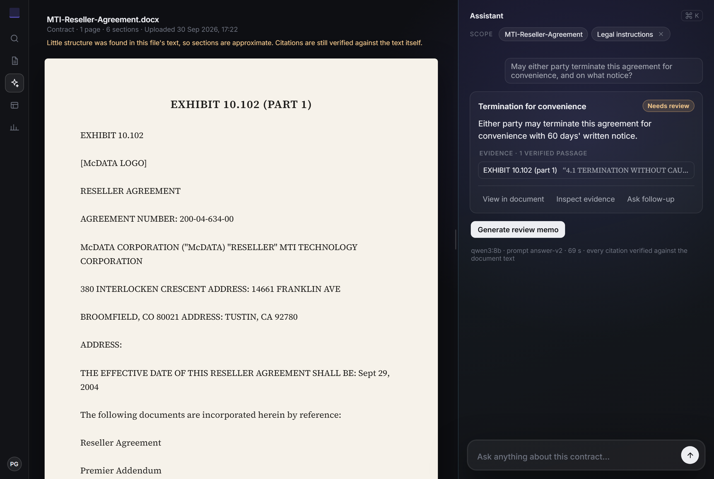
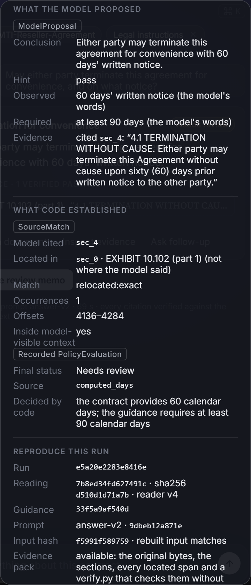
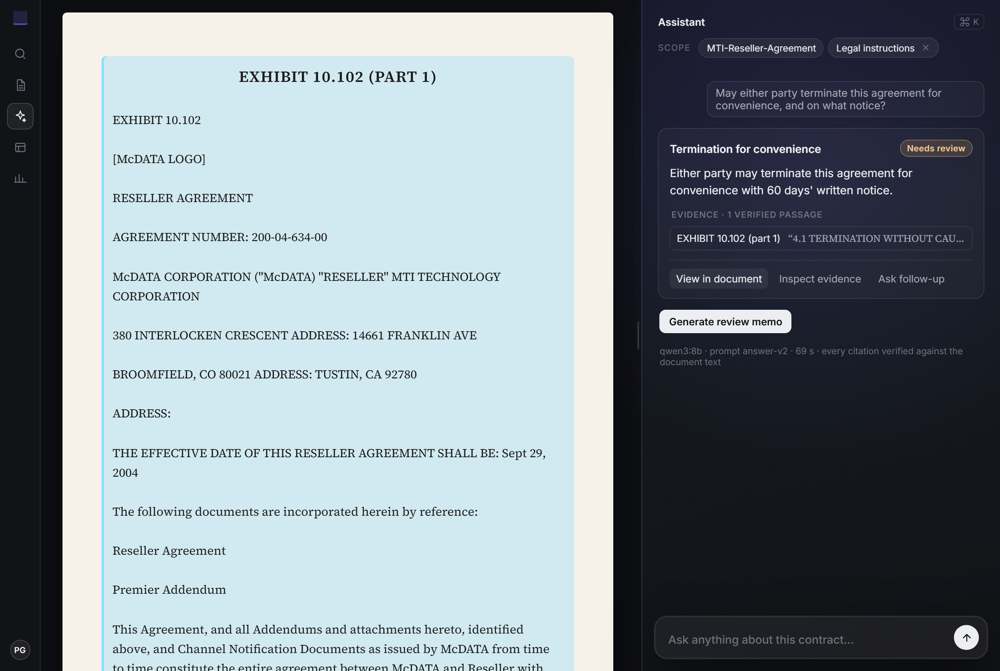
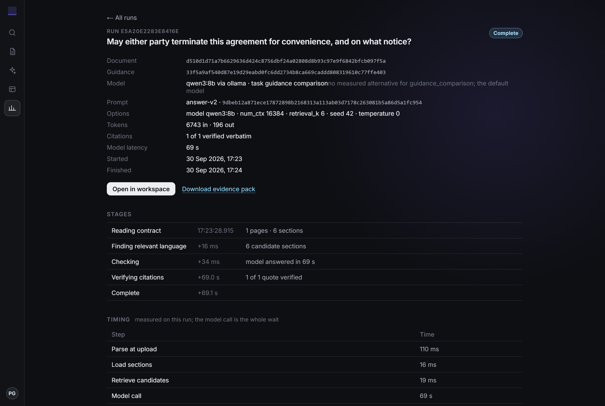

The model said pass. The code said needs review. Here is why, from the record.
Verity reviews a contract against a lawyer's instructions with a local 8-billion-parameter model, and shows nothing the code has not located in the document first. This page walks down one real run on a contract the system had never seen, then lists every measurement behind the product with its own denominator. Everything here is read from the run record; nothing is a mock-up.
The run
Guidance: "We require at least 90 days' written notice for termination for convenience. Anything shorter needs review."
Question: May either party terminate this agreement for convenience, and on what notice?

Walking down
- Final statusNeeds review Either party may terminate this agreement for convenience with 60 days' written notice.
- Why this answer?One read-only projection of the record, assembled by the API. The interface renders it and decides nothing.
- What the model proposedHint pass. Observed, in its words: "60 days' written notice". Required, in its words: "at least 90 days".ModelProposal
- What the model citedSection handle sec_4, the fifth part of the contract.
- What code foundThe quote is not in sec_4. It is in sec_0, characters 4136 to 4284, an exact match, occurring once, inside the slice of text the model was actually shown.SourceMatch
"4.1 TERMINATION WITHOUT CAUSE. Either party may terminate this Agreement without cause upon sixty (60) days prior written notice to the other party."
- What policy code establishedThe contract provides 60 calendar days; the guidance requires at least 90 calendar days. Source computed_days. The model's hint was discarded.PolicyEvaluation
- What the model sawSix candidate sections in retrieval order; five cut at 5,000 characters; 4,375 characters of the contract never reached the model. The exact system and user messages rebuild from the record and hash to what the checking stage recorded: f5991f589759.
- Can it be checked without this serviceThe evidence pack is a zip with the original bytes, the sections, every located span and a verify.py that needs nothing but Python. On this run: every check passed, zero failures.
- ThenRuns: the golden set under every prompt version, the CUAD-30 measurement, the batch, the families, and the three experiments that were killed before this product was built.


What the system is
Bytes are hashed and stored once. A reader turns the file into numbered sections and records what it did with each of seventeen parts of a DOCX, so the paper can say what was not read. BM25 picks six sections. One schema-constrained call to Qwen3 8B through Ollama, at temperature 0, proposes up to five findings, each with quotes. Code then locates every quote in the stored text through a fixed ladder (exact, normalised, case-folded, typed tokens), bounded to the characters the model was shown; a finding whose quotes are not found is withheld and shown as withheld. The status is computed from the duration in the verified quote and the rule in the guidance when both parse, otherwise taken from the model's hint and labelled so. The run is immutable once finished, and the database enforces it.
It is not an agent: no tools, no memory, no iteration, one model call (up to four with retries). It does not edit contracts, does not search across documents, and does not claim scale it has not measured.
Measurements, each with its denominator
| Question | Experiment | Measurement | Decision |
|---|---|---|---|
| Does the answer path hold on labels that are not ours? | CUAD-30: 30 lawyer-annotated contracts, 7 clause questions, 210 runs, pre-registered floors | citation precision 0.85, recall 0.67 against floors 0.80 and 0.50; non-compete 0.20 and uncapped liability 0.60 named unfit | fit to draft a review of five categories; two named as not |
| Does a prompt or retrieval change help? | 44 golden questions on one contract, judged by code, under every candidate | answer-v2 at k=6: 37 of 44; answer-v3: 37 with one regression; k=10: 38 with two regressions and +57% latency; hybrid retrieval: 40 with one regression | none adopted; the rule asks about regressions, not totals |
| Does retrieval hand the model the right section? | Recall@6 against 164 expert-labelled CUAD cases and 38 goldens | 0.85 and 0.92; hybrid 0.95 and 0.97 | BM25 stays until a change shows no golden regression |
| Would a smaller model do? | qwen3:4b on 42 goldens, same parse and options | 36 of 42 versus 34, four times faster, two regressions | routing policy stays empty |
| Does a verifier change lose evidence? | replay of verification over every recorded span, no model call | v5 over 1,299 spans: +10 verified, 0 lost | typed-token tier adopted |
| Do the tests hold the evidence boundary? | 24 one-line mutants applied by hand to the verifier, the run service and the database triggers | 24 of 24 killed; two survived once and got their tests | the mutants stay as a script |
| Would a richer document reader earn its place? | Docling against reader v4 on 20 licensed contracts, five pre-registered criteria | 256 of 292 exact quotes kept, 30 to 419 times slower | rejected; coverage is declared instead |
| What happens under load? | 1, 5, 10 and 20 concurrent questions against the live model | API queue under 2 s at twenty; the model is the only bottleneck; two defects found and fixed | no queue, no second process |
| Should a person wait behind a corpus job? | admission control, first-come versus weighted, same work twice | person's median wait 103 s to 46 s for 6% on the batch | weighted admission kept |
| Can a stranger's document go through? | a never-seen contract through every step, read back from the record | the run above; two reader facts exposed and written down, not fixed | the hero run |
These numbers are not added together. The sets overlap and a span, a question and a contract are not one unit. The audit that keeps them apart, by SHA-256, source and licence, is docs/DATA-EVIDENCE.md.
Checks

Where it falls short, said plainly
Headings in a DOCX are recognised by style only, so a contract with typed numbering becomes 6,000-character parts; the paper says so. Those parts are longer than the 5,000-character prompt window, so part of a long contract never reaches the model; the record says exactly how much. The 8B model reaches for cover pages, drops clauses from lists, and once asserted a false premise it was handed; the golden set records each. Headers, footers and footnotes are not read, and the reader that would read them lost the tournament. None of these is hidden, and none was fixed to make a number look better.